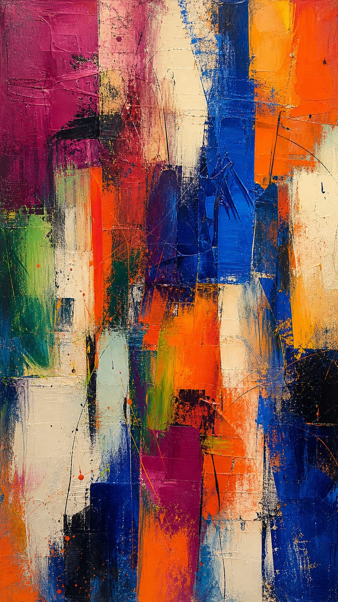
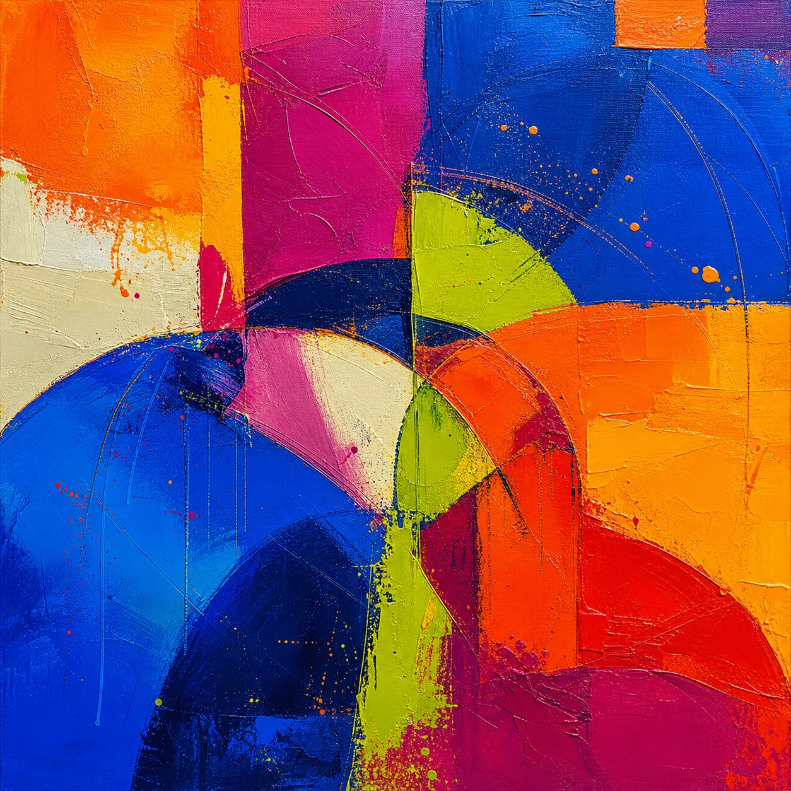
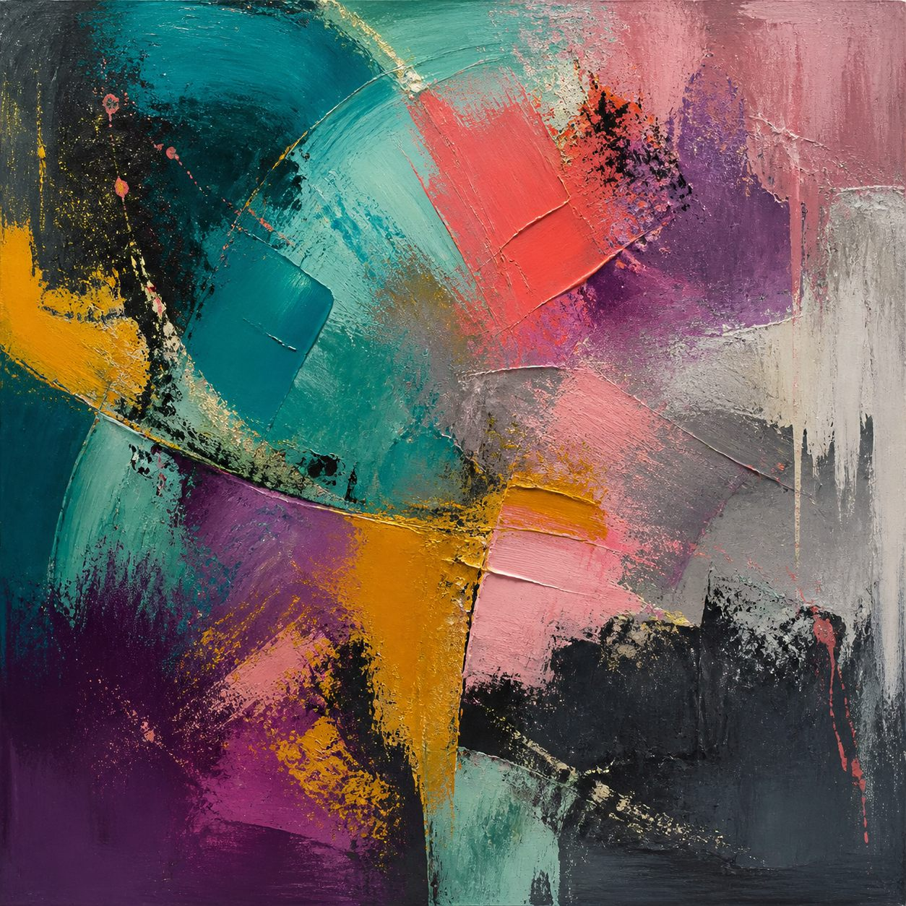
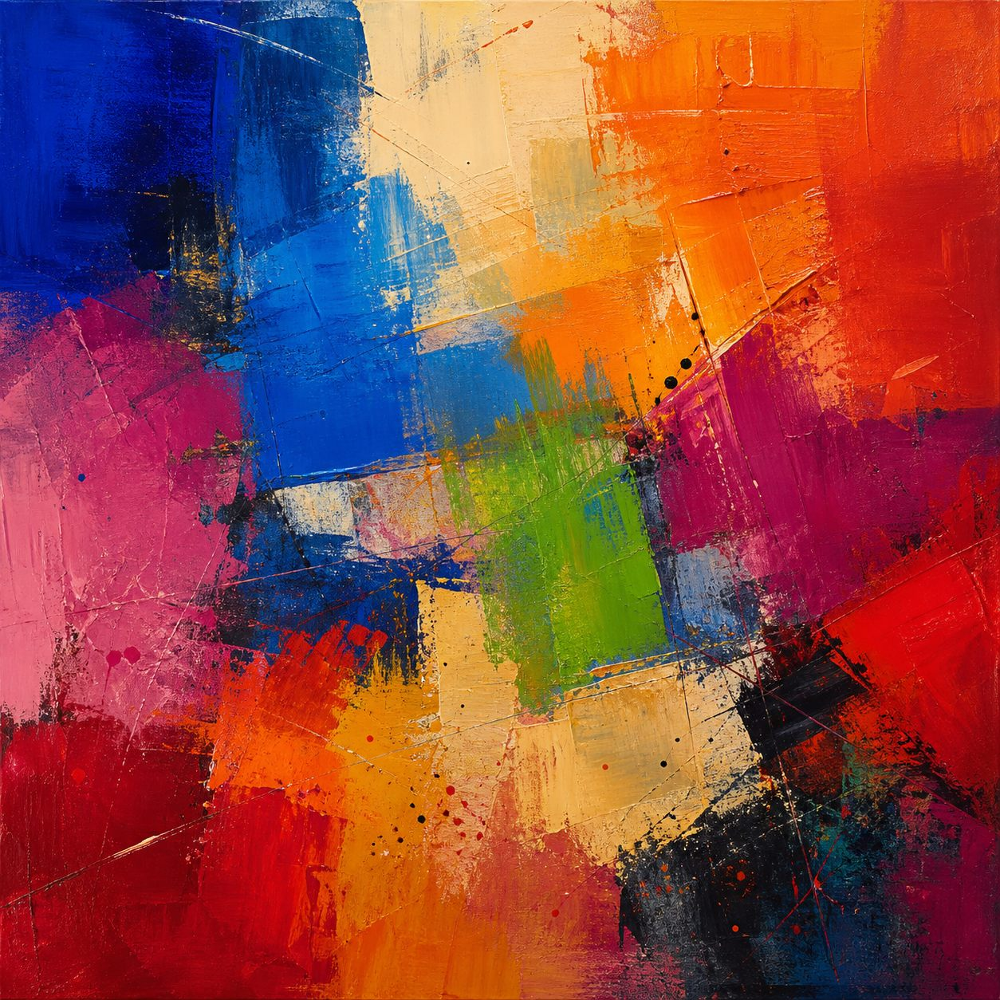

只描述
先说颜色、形状、方向、肌理。不要解释，也不要急着寻找主题。
湖蓝、粉色、深粉色；长方形色块；刮擦的边缘。
一套从抽象画出发的表达练习：先看见，再组词；先贴近画面，再决定要不要走远。
不是把画说得深，而是把自己看见的说清楚。



你不需要立刻说出一个有灵魂的句子。语言感通常来自一串小而准确的转换。
先说颜色、形状、方向、肌理。不要解释，也不要急着寻找主题。
把零散名词合成短语，让形状和动作开始靠近。
问它们如何排列、哪里深、哪里可以进入。把画面变成一条观看路径。
说你站在哪里、被什么吸引、身体出现了什么反应。
最后问：这句话还能不能指回画面？如果不能，可能已经从观看走向过度解释。
这幅画竖着看时，主要是纵向色块、刮擦和厚重肌理。左转之后，原本的纵向关系变成横向关系，蓝色像水面，橙色像黄昏，深色区域开始像一艘船。
这不是画里藏着唯一答案，而是观看方向改变后，色块之间形成了新的关系。点击下面的按钮，亲自改变它的方向。
每幅画都可以从不同方向开始。先描述，再联想；不要把 AI 生成时没有预设的内容，误写成作品的唯一意图。

把你看到的东西放进下面三个盒子。每个盒子只做一件事：事实、关系、反应。
你可以从颜色走到感受，但需要知道自己什么时候已经开始替画面编造心理结论。
一句话如果还能指回某个颜色、形状或观看动作，它通常还站在画面里。
事实给它骨架，关系给它方向，个人感受给它温度。最后删掉解释过量的部分，让句子留一点空白。